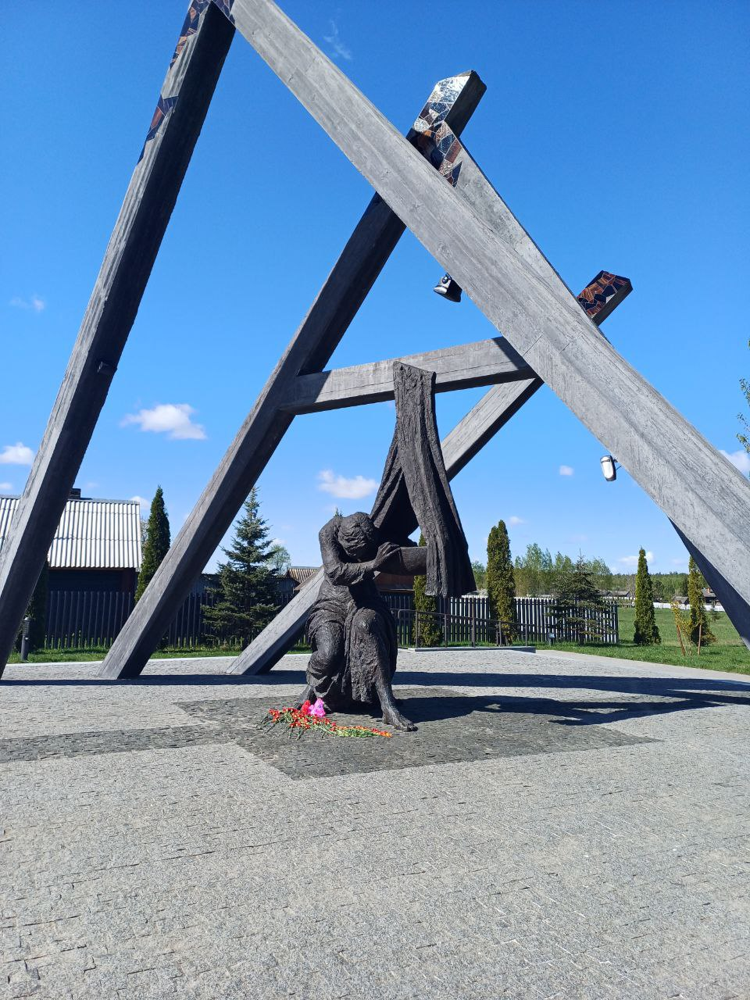
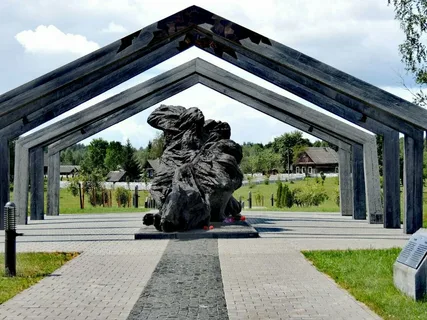
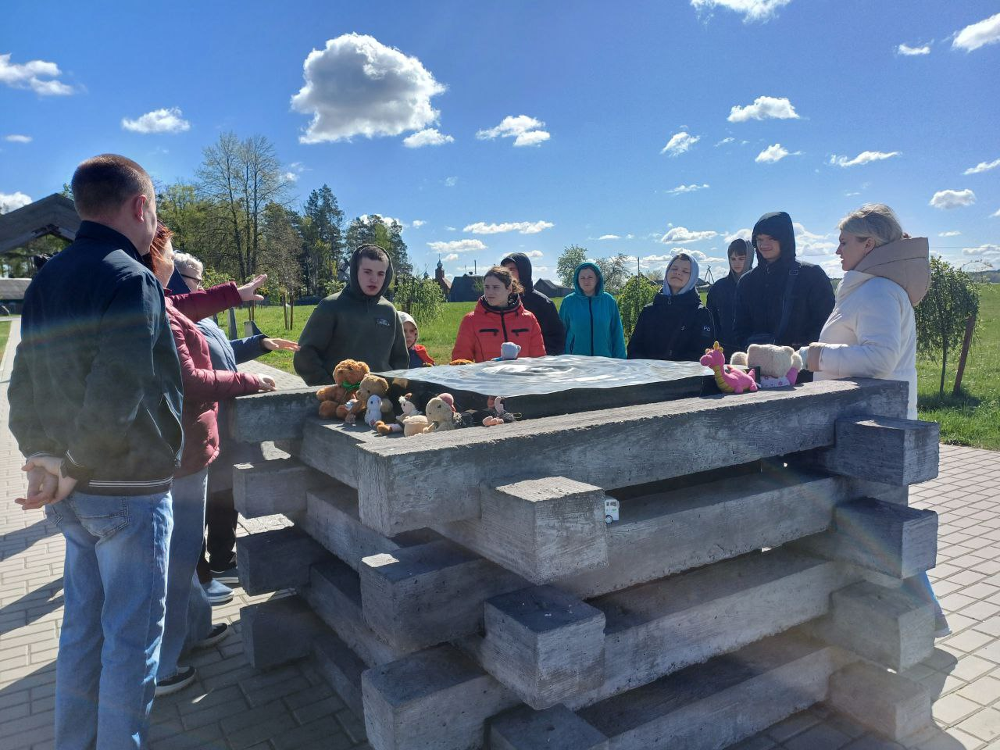
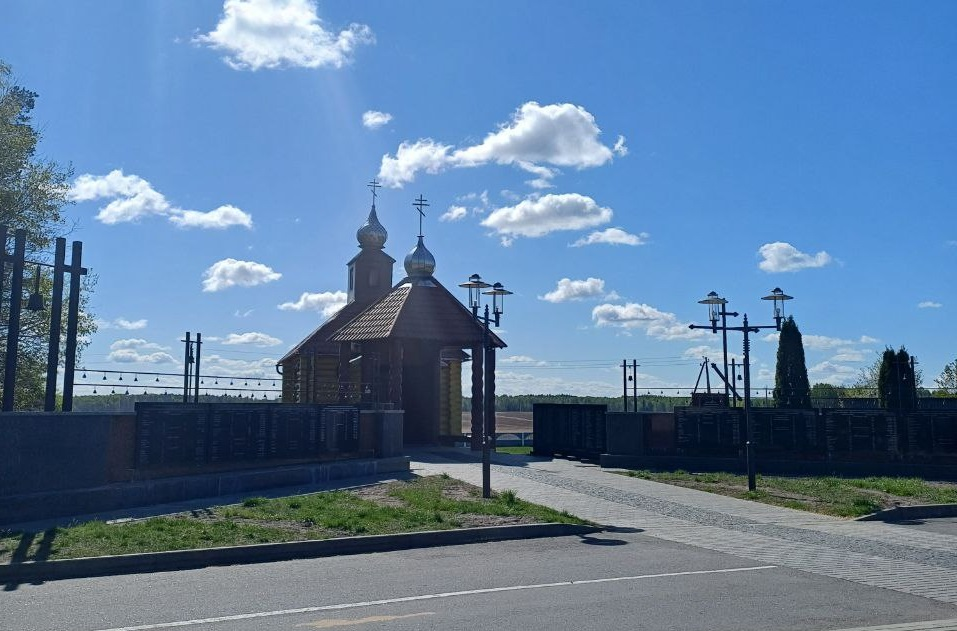

Мемориал памяти сожженных деревень
Мемориальный комплекс «Памяти сожжённых деревень Могилёвской области» в деревне Борки Кировского района — это одно из самых мощных и трогательных мест памяти о трагедии Великой Отечественной войны в Беларуси.
Исторический контекст
15 июня 1942 года в ходе карательной операции, проведённой немецкими оккупационными войсками, деревня Борки и шесть прилегающих посёлков были уничтожены вместе с жителями. В результате этой операции погибло более 1800 человек — мирных жителей, включая женщин, детей и стариков. Операция была частью более широкой акции, целью которой было подавление партизанской активности в регионе.
Архитектурная композиция мемориала
Мемориальный комплекс был открыт в 2020 году после реконструкции и представляет собой серию скульптурных композиций, которые погружают посетителя в атмосферу трагедии и скорби.
- «Беларусь — скорбящая мать» — центральная фигура мемориала: женщина, склонившаяся у пустой детской колыбели, символизирует утрату и горе матерей, потерявших своих детей. 
- «Улица» — композиция, изображающая обгоревшие стены домов, оставленные вещи, детские игрушки, кувшин, молоко, пролившееся из него, занавески, символизирующие внезапно прерванную жизнь.
- «Пламя» — скульптурное полотно, напоминающее языки пламени, в центре которого изображены люди, пытающиеся спастись от огня. 
- «Колодец» — место памяти о замученных детях, заживо брошенных в колодец, символизирует невинные жертвы войны. 
- Парк жизни — разбит в конце мемориала, символизирует возрождение и память о погибших.
Дополнительные элементы комплекса
- Стенд памяти — на котором указаны названия 112 уничтоженных деревень Могилёвской области, среди которых 20 населённых пунктов Кировского района.
- Часовня в честь иконы Божьей Матери «Взыскание погибших», построенная в 2005 году, является частью мемориала и служит местом для молитвы и размышлений. 
- Братская могила — место захоронения сельчан, которые были убиты во время трагедии. В 2009 году их останки были перезахоронены на этом месте, где установлен крест внушительных размеров .
Значение мемориала
Мемориальный комплекс в Борках является не только памятником конкретной трагедии, но и символом всех сожжённых деревень Могилёвской области. Он напоминает о ценой победы и важности сохранения памяти о событиях Великой Отечественной войны для будущих поколений.
Если вы планируете посетить мемориал, рекомендуется заранее ознакомиться с его расположением и часами работы, а также подготовиться к эмоциональному восприятию представленных экспозиций.
Пройди тест для закрепления результата.
Тест